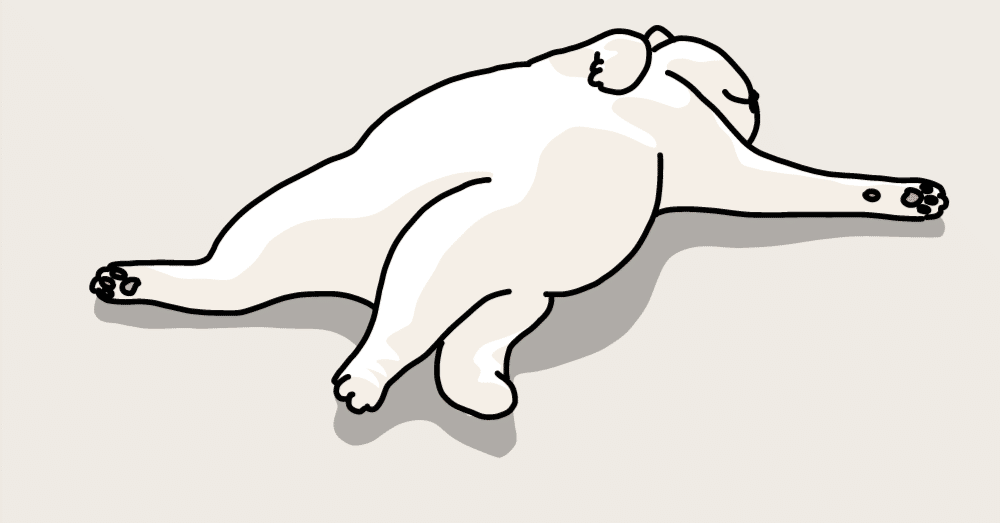

非常に攻撃的である。何がって？ この記事のタイトルのことだ。
ひとりでいる時が一番楽しい。
そんなことをつい当時の恋人にこぼしてしまったら、「ひとりが楽しい人って内向的なのはもちろんだけど、それプラスとっても自律的なのよ」と微笑みながら返してくれた。
私はそれを聞いた時｢たしかに！｣とちょっと大きめな声で同意したと同時に、この人は僕にはもったいないくらいステキな人！ と思ったものだ。ちなみに、そんな気の利いたことを言ってくれた彼女は、その日を境に姿を消してしまったが。
私はひとりの時間がとても好きである。たぶん、2～3年は「誰とも会うな」と言われても大丈夫な自信がある。10年だとちょっと怪しいけど。
なんでこんな風になってしまったのだろうと考えてみると、「幼少期からずっとひとり遊びをしてきたからだ！」とある時、世紀の発明を閃いたかのように思い出した。
幼稚園から小学生の頃は祖父の影響で絵を描くことが好きだったし、中学に上がってからは誰かとではなく、ただひたすらにテニスの壁打ちをしていた。テニスに限っては単に相手をしてくれる人がいなかっただけかもしれないが、壁に向かってボールを打っている方が気楽で心から楽しめていた気がする。
ほかにも、私は昔から誰かと争うのが極端に苦手だったこともあり、みんながしのぎを削って戦ったりしていたゲームや遊びにのめり込むことができなかった。
その代わり、ひとりでも完結するようなシステムが構築されているもの、例えば収集や対戦以外のやり込み要素がある遊びにハマっていった。
現在のルーティンである「文章を書く」ということも、ある意味ひとり遊びの延長のようなものだ。誰かの協力も必要ないし、ただ黙々とひとりで書き続けることができる。目標のようなものがほしければ自分で設定できるし、とにかく自由度が高いのだ。
そんなこんなで、生粋のひとり好きであったことが判明した私だが、あまりにも人と会わないといわゆる“コミュニケーション不足”となり(ここでの意味は「コミュニケーションが不足しているために連携が取れない」といった風の意味ではなく、あくまで栄養不足のような感覚のこと)、誰かと話してみたいな～と思うこともある。人間はなんて欲深い生き物なのだろう。
そんな時でも、誰かに連絡することはなく、こうして駄文を公共に晒しているわけなのだから救いようがない。
……そういえば微笑んでくれたあの子、今でも元気にしてるかな。あれっ？ まさか、今、コミュニケーション不足なのかしら！？